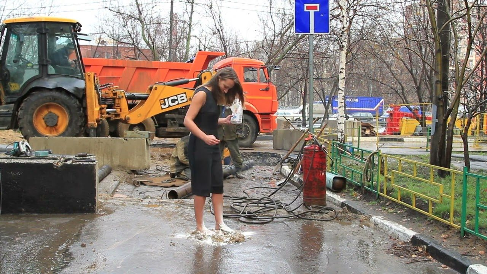
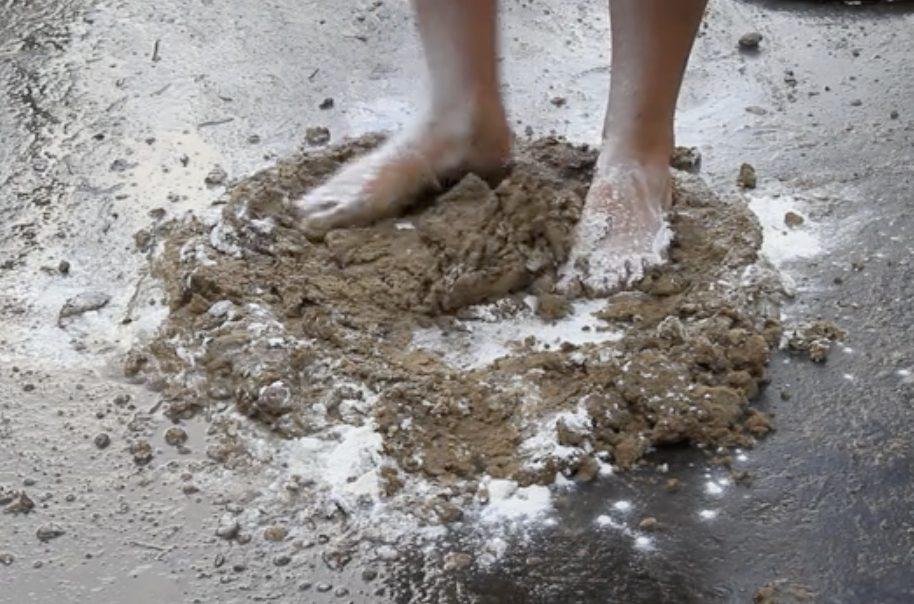
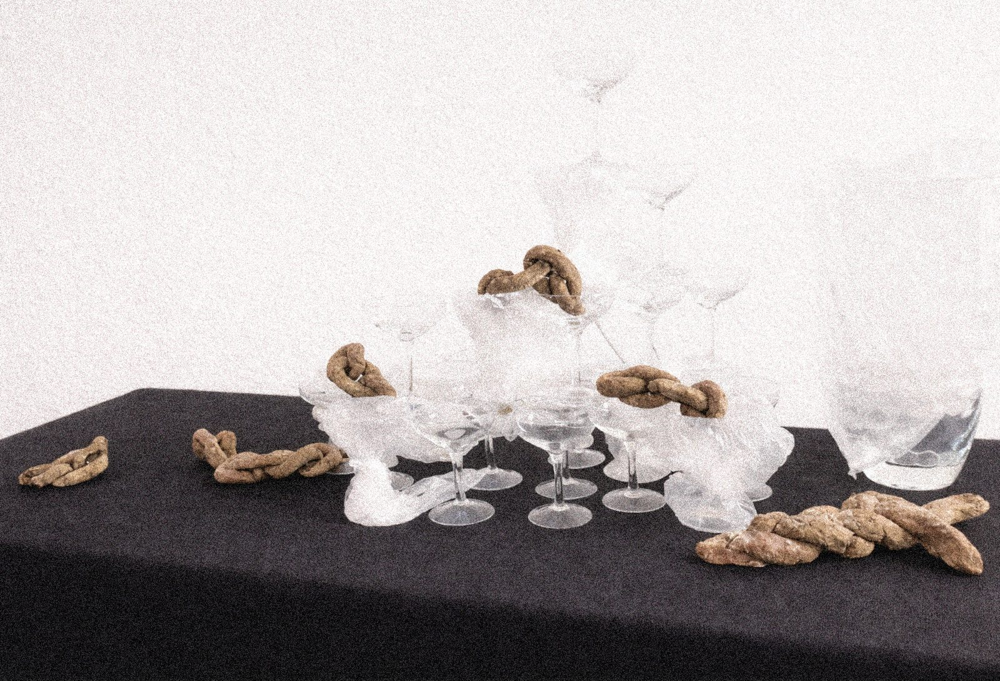
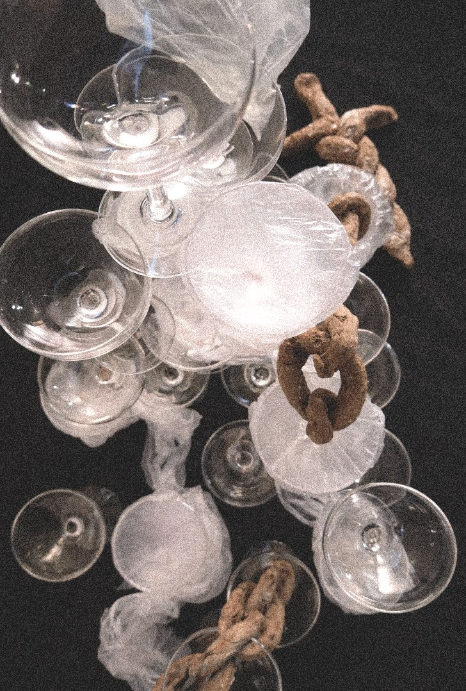
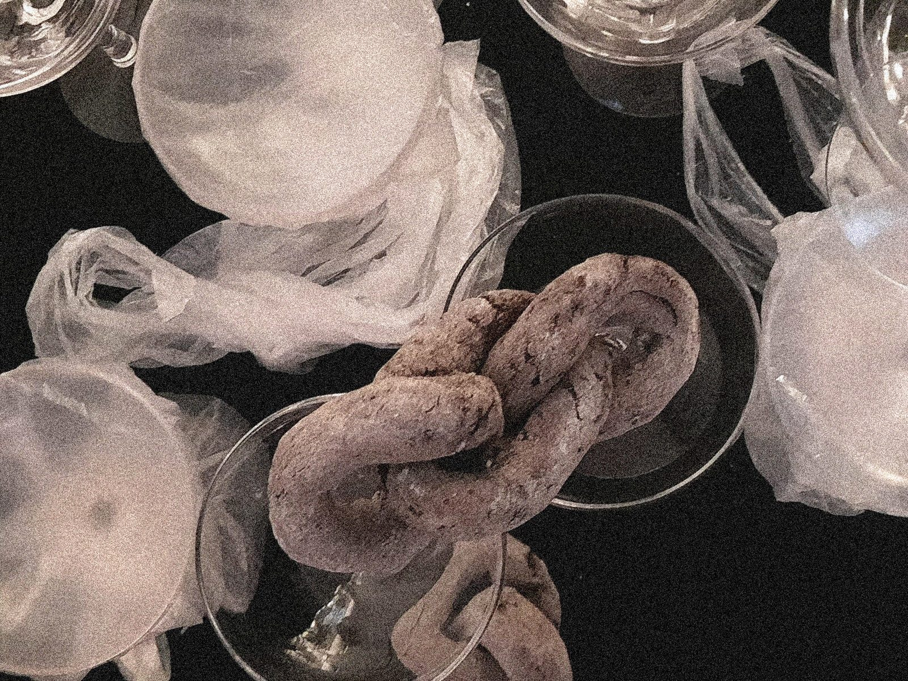
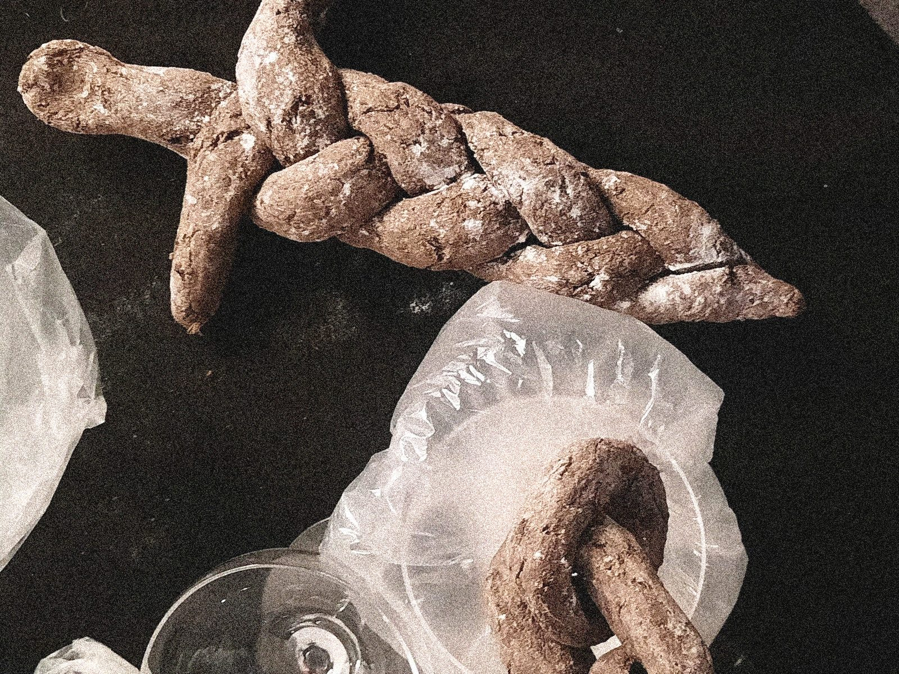

I Thought I Was Baking
- Year
- 2024
- Medium
- Video and objects
- Materials
- Earth, flour, glass goblets
Action and objects on bodily labor that cannot become a stable result. Effort remains unrecognized, form appears without becoming a foundation, and material holds what the body cannot.
Text
In the video, I work with my body inside a real working environment. Men are working nearby, and the constant hum of an excavator fills the space. My body is present within this field of labor, but I have no access to tools, machinery, or results. I mix earth and flour with my feet. I deliberately exclude my hands and use a part of the body that is not associated with skilled, productive work.
The action does not lead to an object. The material does not bind, everything keeps falling apart. I repeat the movement, even though it produces no stable form. The body works, but its effort does not become a foundation.
This is not a performance but a recording of a process. The camera does not stage the action; it simply holds the duration. Over time, the action becomes a state that is repetitive, exhausting, and without climax. The body remains in contact with the ground, yet rooting does not occur.
The objects appear after the action. The body is no longer present, but the material remains. What could not hold together in the video takes shape here and continues to exist as substance: dense, earthly, present.
The pyramid of glass goblets appears fragile and vulnerable, ready to collapse with any shift. The broken chain and the fragment of a dagger, made from earth and flour, feel heavier and more materially grounded. They exist as forms rooted in matter, without offering stability or protection.
For me, the chain and the dagger are not symbols of power, but forms of control and pressure transferred into a fragile material. Their presence does not cancel vulnerability; it reveals it differently. As in the video, there is no final result and no secure foundation. The form exists, but it does not become a base. The objects continue a state in which labor leaves a trace and the body disappears.
The installation continues the line of the video not through sharp contrast, but by lingering in the same unstable state, where fragile glass and dense earth coexist at the same time, equally exposed and slightly out of place.
Shown
- 2024May the journey make us happy, Galerie EmpireZeroOne, Cologne
- 2018A-real Video Festival, Elektromuseum, Moscow — first version, The Base
- 2014Modus Operandi, National Centre for Contemporary Arts, Moscow — first version, The Base
Second version of The Base (2014), video, 2:37 — watch on Vimeo.

▶ YouTube



